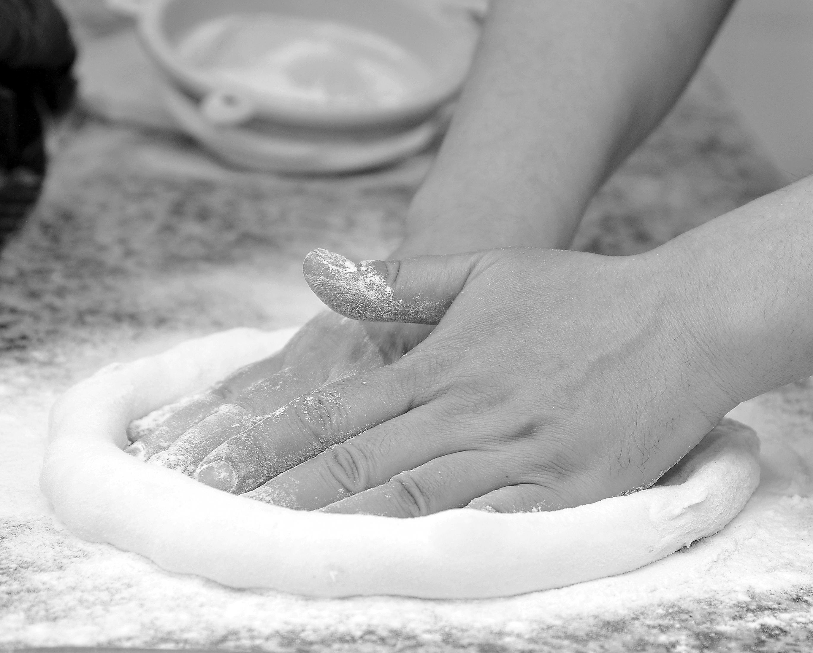

Mastering Homemade Pasta: From Flour to Fork

Unlock the secrets to crafting perfect pasta from scratch. Learn about the best flours, techniques for kneading, rolling, and shaping, and tips for cooking your fresh creations to al dente perfection.
Read More